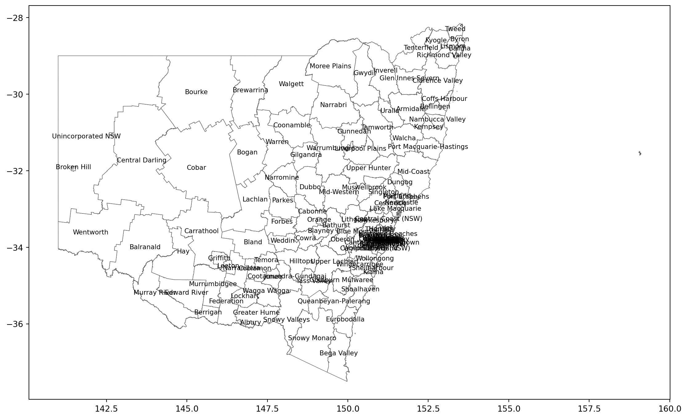

import galah
galah.galah_config(atlas = "Australia")Generating species lists for Local Government Areas (LGAs) with counts using shape files
Species lists are important for individuals who want to report on what species there are in a particular area, and cross reference it with threatened species lists. This can be useful for governments, consultants and researchers.
In this post, we will show you how to use galah-python and geopandas to generate a species list for the LGA of Yass Valley in 2023, as well as a visualisation using matplotlib of all LGAs with names.
Generating a species list with counts for the Yass Valley in 2023 using spatial data in the ALA
First, we will set configurations for galah-python, as we want to be sure we are querying the ALA and not other living atlases for this exercise.
Now, we want to build our query for the atlas_species() function to generate the list. First, we know that we only want species for the year 2023 in this example. To check what filter we should use for our year, we will use one of galah-python’s many lookup functions, search_all(). We will use the fields argument, as this is what you will use the majority of the time to narrow the data you want to get from the ALA.
galah.search_all(fields="year")| id | description | type | link | |
|---|---|---|---|---|
| 0 | year | The year in which an occurrence was observed. ... | field | https://github.com/AtlasOfLivingAustralia/ala-... |
| 1 | endDayOfYear | http://rs.tdwg.org/dwc/terms/endDayOfYear | field | NaN |
| 2 | datePrecision | The precision of the date information for the ... | field | NaN |
| 3 | occurrenceYear | Year ranges for a search. Calculated based on ... | field | NaN |
| 4 | startDayOfYear | http://rs.tdwg.org/dwc/terms/startDayOfYear | field | NaN |
| 5 | namePublishedInYear | http://rs.tdwg.org/dwc/terms/namePublishedInYear | field | NaN |
There are a number of options available, but we will choose the one called year, as that refers to the year in which an occurrence occurred and is what we want.
Before getting our species list, we will need to find out how to search for spatial data on Local Government Areas in the ALA. We will use the search term Local Government Areas to ensure we get only the relevant spatial data.
galah.search_all(fields="Local Government Areas")| id | description | type | link | |
|---|---|---|---|---|
| 0 | cl23 | Local Government Areas 2012 deprecated LGA Bou... | layers | |
| 1 | cl959 | Local Government Areas 2011 Local Government A... | layers | |
| 2 | cl2012 | NSW Local Land Services Regions NSW Local Land... | layers | |
| 3 | cl10923 | Local Government Areas PSMA 2018 Local Governm... | layers |
We will be using cl10923, as this is the latest data on LGAs in the ALA. A note about spatial layers: Each spatial layer has a two letter code, along with a number to identify it. The abbreviations are as follows:
cl = contextual layer (i.e. boundaries of LGAs, Indigenous Protected Areas, States/Territories etc.)
10923 = number associated with the spatial layer in the atlas
To get all possible values for this spatial layer, we will use another lookup function in galah-python: the show_values() function.
galah.show_values(field="cl10923")| field | category | |
|---|---|---|
| 0 | cl10923 | BRISBANE CITY |
| 1 | cl10923 | EAST GIPPSLAND SHIRE |
| 2 | cl10923 | GREATER GEELONG CITY |
| 3 | cl10923 | PASTORAL UNINCORPORATED AREA |
| 4 | cl10923 | MORETON BAY REGIONAL |
| ... | ... | ... |
| 555 | cl10923 | WAGAIT SHIRE |
| 556 | cl10923 | WOORABINDA ABORIGINAL SHIRE |
| 557 | cl10923 | WUJAL WUJAL ABORIGINAL SHIRE |
| 558 | cl10923 | CHERBOURG ABORIGINAL SHIRE |
| 559 | cl10923 | BELYUEN SHIRE |
560 rows × 2 columns
Since there are 560 LGAs within Australia, it is a lot of data to filter through! Luckily, galah-python can handle this too with its accompanying lookup function: search_values().
galah.search_values(field="cl10923",value="YASS")| field | category | |
|---|---|---|
| 0 | cl10923 | YASS VALLEY COUNCIL |
Now we know that YASS VALLEY COUNCIL is the value we want for our spatial filter, we can then build our query to get a species list for Yass Valley:
galah.atlas_species(filters=["year=2023","cl10923=YASS VALLEY COUNCIL"])| Species | Species Name | Scientific Name Authorship | Taxon Rank | Kingdom | Phylum | Class | Order | Family | Genus | Vernacular Name | |
|---|---|---|---|---|---|---|---|---|---|---|---|
| 0 | https://biodiversity.org.au/afd/taxa/5291343e-... | Gymnorhina tibicen | (Latham, 1801) | species | Animalia | Chordata | Aves | Passeriformes | Artamidae | Gymnorhina | Australian Magpie |
| 1 | https://biodiversity.org.au/afd/taxa/97a59c84-... | Rhipidura (Rhipidura) albiscapa | Gould, 1840 | species | Animalia | Chordata | Aves | Passeriformes | Rhipiduridae | Rhipidura | Grey Fantail |
| 2 | https://biodiversity.org.au/afd/taxa/760401df-... | Malurus (Malurus) cyaneus | (Ellis, 1782) | species | Animalia | Chordata | Aves | Passeriformes | Maluridae | Malurus | Superb Fairy-wren |
| 3 | https://biodiversity.org.au/afd/taxa/2c33a1fd-... | Cacatua (Cacatua) galerita | (Latham, 1790) | species | Animalia | Chordata | Aves | Psittaciformes | Cacatuidae | Cacatua | Sulphur-crested Cockatoo |
| 4 | https://biodiversity.org.au/afd/taxa/5e0f496f-... | Platycercus (Platycercus) elegans | (Gmelin, 1788) | species | Animalia | Chordata | Aves | Psittaciformes | Psittacidae | Platycercus | Crimson Rosella |
| ... | ... | ... | ... | ... | ... | ... | ... | ... | ... | ... | ... |
| 723 | https://id.biodiversity.org.au/taxon/apni/5141... | Pterostylis jonesii | G.N.Backh. | species | Plantae | Charophyta | Equisetopsida | Asparagales | Orchidaceae | Pterostylis | NaN |
| 724 | https://id.biodiversity.org.au/taxon/apni/5141... | Pterostylis multiflora | (D.L.Jones) G.N.Backh. | species | Plantae | Charophyta | Equisetopsida | Asparagales | Orchidaceae | Pterostylis | Mountain Brown-tip Greenhood |
| 725 | https://id.biodiversity.org.au/taxon/apni/5141... | Pterostylis pedunculata | R.Br. | species | Plantae | Charophyta | Equisetopsida | Asparagales | Orchidaceae | Pterostylis | Maroonhood |
| 726 | https://id.biodiversity.org.au/taxon/apni/5141... | Thelymitra ixioides | Sw. | species | Plantae | Charophyta | Equisetopsida | Asparagales | Orchidaceae | Thelymitra | Dotted Sun Orchid |
| 727 | https://id.biodiversity.org.au/taxon/ausmoss/1... | Thuidiopsis sparsa | (Hook.f. & Wilson) Broth. | species | Plantae | Bryophyta | Bryopsida | Hypnales | Thuidiaceae | Thuidiopsis | NaN |
728 rows × 11 columns
To get the number of occurrences of each species, include the newly added argument counts=True. This defaults to False, as some people may only want species lists.
galah.atlas_species(filters=["year=2023","cl10923=YASS VALLEY COUNCIL"],counts=True)| Species | Species Name | Scientific Name Authorship | Taxon Rank | Kingdom | Phylum | Class | Order | Family | Genus | Vernacular Name | Number of records | |
|---|---|---|---|---|---|---|---|---|---|---|---|---|
| 0 | https://biodiversity.org.au/afd/taxa/5291343e-... | Gymnorhina tibicen | (Latham, 1801) | species | Animalia | Chordata | Aves | Passeriformes | Artamidae | Gymnorhina | Australian Magpie | 330 |
| 1 | https://biodiversity.org.au/afd/taxa/97a59c84-... | Rhipidura (Rhipidura) albiscapa | Gould, 1840 | species | Animalia | Chordata | Aves | Passeriformes | Rhipiduridae | Rhipidura | Grey Fantail | 250 |
| 2 | https://biodiversity.org.au/afd/taxa/760401df-... | Malurus (Malurus) cyaneus | (Ellis, 1782) | species | Animalia | Chordata | Aves | Passeriformes | Maluridae | Malurus | Superb Fairy-wren | 247 |
| 3 | https://biodiversity.org.au/afd/taxa/2c33a1fd-... | Cacatua (Cacatua) galerita | (Latham, 1790) | species | Animalia | Chordata | Aves | Psittaciformes | Cacatuidae | Cacatua | Sulphur-crested Cockatoo | 237 |
| 4 | https://biodiversity.org.au/afd/taxa/5e0f496f-... | Platycercus (Platycercus) elegans | (Gmelin, 1788) | species | Animalia | Chordata | Aves | Psittaciformes | Psittacidae | Platycercus | Crimson Rosella | 201 |
| ... | ... | ... | ... | ... | ... | ... | ... | ... | ... | ... | ... | ... |
| 723 | https://id.biodiversity.org.au/taxon/apni/5141... | Pterostylis jonesii | G.N.Backh. | species | Plantae | Charophyta | Equisetopsida | Asparagales | Orchidaceae | Pterostylis | NaN | 1 |
| 724 | https://id.biodiversity.org.au/taxon/apni/5141... | Pterostylis multiflora | (D.L.Jones) G.N.Backh. | species | Plantae | Charophyta | Equisetopsida | Asparagales | Orchidaceae | Pterostylis | Mountain Brown-tip Greenhood | 1 |
| 725 | https://id.biodiversity.org.au/taxon/apni/5141... | Pterostylis pedunculata | R.Br. | species | Plantae | Charophyta | Equisetopsida | Asparagales | Orchidaceae | Pterostylis | Maroonhood | 1 |
| 726 | https://id.biodiversity.org.au/taxon/apni/5141... | Thelymitra ixioides | Sw. | species | Plantae | Charophyta | Equisetopsida | Asparagales | Orchidaceae | Thelymitra | Dotted Sun Orchid | 1 |
| 727 | https://id.biodiversity.org.au/taxon/ausmoss/1... | Thuidiopsis sparsa | (Hook.f. & Wilson) Broth. | species | Plantae | Bryophyta | Bryopsida | Hypnales | Thuidiaceae | Thuidiopsis | NaN | 1 |
728 rows × 12 columns
Now, to save this to a file that can be used for reporting, we can use the pandas dataframe built-in function to_csv.
species_list_yass_valley_counts = galah.atlas_species(filters=["year=2023","cl10923=YASS VALLEY COUNCIL"],counts=True)
species_list_yass_valley_counts.to_csv("Species_List_Yass_Valley_Counts_ALA_Spatial_Filter.csv")Generating a species list with counts for the Yass Valley in 2023 using a shapefile from the Australian Bureau of Statistics.
Now, we will build the same query, but use the latest LGA data from the Australian Bureau of Statistics Digital Boundary files page. For this tutorial, we will need the “Local Government Areas - 2023 - Shapefile” shapefile. Once you have downloaded it, unzip it to make sure you have the LGA_2023_AUST_GDA2020.shp file. Put it in a folder you can easily access.
To load this shapefile into Python, we need the aforementioned geopandas.
import geopandas as gpd
LGAs_2023 = gpd.read_file("LGA_2023_AUST_GDA2020.shp")
LGAs_2023| LGA_CODE23 | LGA_NAME23 | STE_CODE21 | STE_NAME21 | AUS_CODE21 | AUS_NAME21 | AREASQKM | LOCI_URI21 | geometry | |
|---|---|---|---|---|---|---|---|---|---|
| 0 | 10050 | Albury | 1 | New South Wales | AUS | Australia | 305.6386 | https://linked.data.gov.au/dataset/asgsed3/LGA... | POLYGON ((146.86566 -36.07292, 146.86512 -36.0... |
| 1 | 10180 | Armidale | 1 | New South Wales | AUS | Australia | 7809.4406 | https://linked.data.gov.au/dataset/asgsed3/LGA... | POLYGON ((152.38816 -30.52639, 152.38812 -30.5... |
| 2 | 10250 | Ballina | 1 | New South Wales | AUS | Australia | 484.9692 | https://linked.data.gov.au/dataset/asgsed3/LGA... | MULTIPOLYGON (((153.57106 -28.87381, 153.57106... |
| 3 | 10300 | Balranald | 1 | New South Wales | AUS | Australia | 21690.7493 | https://linked.data.gov.au/dataset/asgsed3/LGA... | POLYGON ((143.00433 -33.78164, 143.01538 -33.7... |
| 4 | 10470 | Bathurst | 1 | New South Wales | AUS | Australia | 3817.8645 | https://linked.data.gov.au/dataset/asgsed3/LGA... | POLYGON ((149.84877 -33.52784, 149.84864 -33.5... |
| ... | ... | ... | ... | ... | ... | ... | ... | ... | ... |
| 561 | 89799 | Migratory - Offshore - Shipping (ACT) | 8 | Australian Capital Territory | AUS | Australia | NaN | https://linked.data.gov.au/dataset/asgsed3/LGA... | None |
| 562 | 99399 | Unincorp. Other Territories | 9 | Other Territories | AUS | Australia | 105.8806 | https://linked.data.gov.au/dataset/asgsed3/LGA... | MULTIPOLYGON (((167.94747 -29.12757, 167.94748... |
| 563 | 99499 | No usual address (OT) | 9 | Other Territories | AUS | Australia | NaN | https://linked.data.gov.au/dataset/asgsed3/LGA... | None |
| 564 | 99799 | Migratory - Offshore - Shipping (OT) | 9 | Other Territories | AUS | Australia | NaN | https://linked.data.gov.au/dataset/asgsed3/LGA... | None |
| 565 | ZZZZZ | Outside Australia | Z | Outside Australia | ZZZ | Outside Australia | NaN | https://linked.data.gov.au/dataset/asgsed3/LGA... | None |
566 rows × 9 columns
Now that we have the shapefile loaded in, we need to ensure that it is in the correct Coordinate Reference System (CRS). What a CRS is is a way of representing coordinates of the earth (which are in three dimensions) into a two-dimensional representation. There are many available, and the ALA chooses to use the World Geodetic System 84, which is the standard used in cartography and GPS. To ensure you are in the correct Coordinate Reference System, geopandas has a handy function called to_crs() that will automatically do the conversion for you. However, the to_crs function uses something called the EPSG system, which is named after the European Petroleum Survey Group. EPSG was a scientific organisation specialising in geospatial exercises relatied to oil exploration. Though the European Petroleum Survey Group is no longer around, many things, including geopandas, use their CRS codes. The one corresponding to WGS84 is EPSG:4326. To change the Coordinate Reference System for a shapefile, simply enter the four-digit code as the argument to the to_crs() function.
LGAs_2023 = LGAs_2023.to_crs(4326)
LGAs_2023.plot(edgecolor = "#5A5A5A", linewidth = 0.5, facecolor = "white", figsize = (12,5))<Axes: >
Now that we can see all of the LGAs in New South Wales, we can then use matplotlib to show us the names of the LGAs in relation to where they are on the map.
from matplotlib import pyplot as plt
NSW = LGAs_2023[LGAs_2023['STE_NAME21'] == "New South Wales"]
NSW.plot(edgecolor = "#5A5A5A", linewidth = 0.5, facecolor = "white", figsize = (14,10))
NSW['coords'] = NSW['geometry'].apply(lambda x: x.representative_point().coords[:][0] if x is not None else None)
for idx, row in NSW.iterrows():
if row['coords'] is not None:
plt.annotate(text=row['LGA_NAME23'], xy=row['coords'],
horizontalalignment='center', fontsize = 8)/Users/buy003/anaconda3/envs/galah-dev/lib/python3.11/site-packages/geopandas/geodataframe.py:1543: SettingWithCopyWarning:
A value is trying to be set on a copy of a slice from a DataFrame.
Try using .loc[row_indexer,col_indexer] = value instead
See the caveats in the documentation: https://pandas.pydata.org/pandas-docs/stable/user_guide/indexing.html#returning-a-view-versus-a-copy
super().__setitem__(key, value)
For this exercise, we are going to choose the Yass Valley, though users can choose others of interest if the prefer. First, we need to isolate the shape of Yass Valley from the others. If we look at data columns in the NSW data frame:
NSW.columnsIndex(['LGA_CODE23', 'LGA_NAME23', 'STE_CODE21', 'STE_NAME21', 'AUS_CODE21',
'AUS_NAME21', 'AREASQKM', 'LOCI_URI21', 'geometry', 'coords'],
dtype='object')The two columns of interest are the ones titled LGA_NAME23 and geometry. To select only the row with the LGA name Yass Valley, we need to write that in terms pandas will understand. To do this, we need to use the comparative == within the dataframe itself.
NSW[NSW['LGA_NAME23'] == "Yass Valley"]| LGA_CODE23 | LGA_NAME23 | STE_CODE21 | STE_NAME21 | AUS_CODE21 | AUS_NAME21 | AREASQKM | LOCI_URI21 | geometry | coords | |
|---|---|---|---|---|---|---|---|---|---|---|
| 127 | 18710 | Yass Valley | 1 | New South Wales | AUS | Australia | 3995.017 | https://linked.data.gov.au/dataset/asgsed3/LGA... | POLYGON ((148.58152 -34.80679, 148.58153 -34.8... | (148.9412717523411, -34.92658608374451) |
Now that we have chosen the row that we want, we will now need to choose the column of data that we want. To choose both the row and the column we want, we will add another argument at the end of the dataframe in [] with the name of the column. In our case, we want to use the word geometry.
NSW[NSW['LGA_NAME23'] == "Yass Valley"]["geometry"]127 POLYGON ((148.58152 -34.80679, 148.58153 -34.8...
Name: geometry, dtype: geometryNow that we have selected the row and the column we want, we need to tell Python the row number to get the individual cell’s data.
NSW[NSW['LGA_NAME23'] == "Yass Valley"]["geometry"][127]
Now that we have chosen the shape that we want, we will store it in a variable titled yass_valley_geometry to use for the rest of our queries.
yass_valley_geometry = NSW[NSW['LGA_NAME23'] == "Yass Valley"]["geometry"][127]Now, we can get a species list of all species in the Yass Valley using the variable above.
galah.atlas_species(polygon=yass_valley_geometry)| Species | Species Name | Scientific Name Authorship | Taxon Rank | Kingdom | Phylum | Class | Order | Family | Genus | Vernacular Name | |
|---|---|---|---|---|---|---|---|---|---|---|---|
| 0 | https://biodiversity.org.au/afd/taxa/b6f829dd-... | Wallabia bicolor | (Desmarest, 1804) | species | Animalia | Chordata | Mammalia | Diprotodontia | Macropodidae | Wallabia | Swamp Wallaby |
| 1 | https://biodiversity.org.au/afd/taxa/5291343e-... | Gymnorhina tibicen | (Latham, 1801) | species | Animalia | Chordata | Aves | Passeriformes | Artamidae | Gymnorhina | Australian Magpie |
| 2 | https://biodiversity.org.au/afd/taxa/760401df-... | Malurus (Malurus) cyaneus | (Ellis, 1782) | species | Animalia | Chordata | Aves | Passeriformes | Maluridae | Malurus | Superb Fairy-wren |
| 3 | https://biodiversity.org.au/afd/taxa/2c33a1fd-... | Cacatua (Cacatua) galerita | (Latham, 1790) | species | Animalia | Chordata | Aves | Psittaciformes | Cacatuidae | Cacatua | Sulphur-crested Cockatoo |
| 4 | https://biodiversity.org.au/afd/taxa/9b4ad548-... | Eolophus roseicapilla | (Vieillot, 1817) | species | Animalia | Chordata | Aves | Psittaciformes | Cacatuidae | Eolophus | Galah |
| ... | ... | ... | ... | ... | ... | ... | ... | ... | ... | ... | ... |
| 4080 | https://id.biodiversity.org.au/taxon/lichen/30... | Septotrapelia usnica | (Sipman) Kalb & Bungartz | species | Fungi | Ascomycota | Lecanoromycetes | Lecanorales | Pilocarpaceae | Septotrapelia | NaN |
| 4081 | https://id.biodiversity.org.au/taxon/lichen/30... | Caloplaca lateritia | (Taylor) Zahlbr. | species | Fungi | Ascomycota | Lecanoromycetes | Teloschistales | Teloschistaceae | Caloplaca | NaN |
| 4082 | https://id.biodiversity.org.au/taxon/lichen/30... | Rhizocarpon intersitum | Arnold | species | Fungi | Ascomycota | Lecanoromycetes | Lecanorales | Rhizocarpaceae | Rhizocarpon | NaN |
| 4083 | https://id.biodiversity.org.au/taxon/lichen/30... | Amandinea hypohyalina | Elix & P.M.McCarthy | species | Fungi | Ascomycota | Lecanoromycetes | Teloschistales | Physciaceae | Amandinea | NaN |
| 4084 | https://id.biodiversity.org.au/taxon/lichen/30... | Sarcogyne molongloensis | P.M.McCarthy & Elix | species | Fungi | Ascomycota | Lecanoromycetes | Acarosporales | Acarosporaceae | Sarcogyne | NaN |
4085 rows × 11 columns
If we want to get the number of times each species has been spotted in the Yass valley, we can then add the counts=True argument to atlas_species().
galah.atlas_species(polygon=yass_valley_geometry,counts=True)| Species | Species Name | Scientific Name Authorship | Taxon Rank | Kingdom | Phylum | Class | Order | Family | Genus | Vernacular Name | Number of records | |
|---|---|---|---|---|---|---|---|---|---|---|---|---|
| 0 | https://biodiversity.org.au/afd/taxa/b6f829dd-... | Wallabia bicolor | (Desmarest, 1804) | species | Animalia | Chordata | Mammalia | Diprotodontia | Macropodidae | Wallabia | Swamp Wallaby | 10296 |
| 1 | https://biodiversity.org.au/afd/taxa/5291343e-... | Gymnorhina tibicen | (Latham, 1801) | species | Animalia | Chordata | Aves | Passeriformes | Artamidae | Gymnorhina | Australian Magpie | 8522 |
| 2 | https://biodiversity.org.au/afd/taxa/760401df-... | Malurus (Malurus) cyaneus | (Ellis, 1782) | species | Animalia | Chordata | Aves | Passeriformes | Maluridae | Malurus | Superb Fairy-wren | 5985 |
| 3 | https://biodiversity.org.au/afd/taxa/2c33a1fd-... | Cacatua (Cacatua) galerita | (Latham, 1790) | species | Animalia | Chordata | Aves | Psittaciformes | Cacatuidae | Cacatua | Sulphur-crested Cockatoo | 5975 |
| 4 | https://biodiversity.org.au/afd/taxa/9b4ad548-... | Eolophus roseicapilla | (Vieillot, 1817) | species | Animalia | Chordata | Aves | Psittaciformes | Cacatuidae | Eolophus | Galah | 5644 |
| ... | ... | ... | ... | ... | ... | ... | ... | ... | ... | ... | ... | ... |
| 4080 | https://id.biodiversity.org.au/taxon/lichen/30... | Septotrapelia usnica | (Sipman) Kalb & Bungartz | species | Fungi | Ascomycota | Lecanoromycetes | Lecanorales | Pilocarpaceae | Septotrapelia | NaN | 1 |
| 4081 | https://id.biodiversity.org.au/taxon/lichen/30... | Caloplaca lateritia | (Taylor) Zahlbr. | species | Fungi | Ascomycota | Lecanoromycetes | Teloschistales | Teloschistaceae | Caloplaca | NaN | 1 |
| 4082 | https://id.biodiversity.org.au/taxon/lichen/30... | Rhizocarpon intersitum | Arnold | species | Fungi | Ascomycota | Lecanoromycetes | Lecanorales | Rhizocarpaceae | Rhizocarpon | NaN | 1 |
| 4083 | https://id.biodiversity.org.au/taxon/lichen/30... | Amandinea hypohyalina | Elix & P.M.McCarthy | species | Fungi | Ascomycota | Lecanoromycetes | Teloschistales | Physciaceae | Amandinea | NaN | 1 |
| 4084 | https://id.biodiversity.org.au/taxon/lichen/30... | Sarcogyne molongloensis | P.M.McCarthy & Elix | species | Fungi | Ascomycota | Lecanoromycetes | Acarosporales | Acarosporaceae | Sarcogyne | NaN | 1 |
4085 rows × 12 columns
Say now you want to only look at specific years for either reporting reasons, or to see how observations differ from year to year in your LGA. You can add filters like we did in the previous example, with year=2023.
galah.atlas_species(polygon=yass_valley_geometry,filters="year=2023")| Species | Species Name | Scientific Name Authorship | Taxon Rank | Kingdom | Phylum | Class | Order | Family | Genus | Vernacular Name | |
|---|---|---|---|---|---|---|---|---|---|---|---|
| 0 | https://biodiversity.org.au/afd/taxa/5291343e-... | Gymnorhina tibicen | (Latham, 1801) | species | Animalia | Chordata | Aves | Passeriformes | Artamidae | Gymnorhina | Australian Magpie |
| 1 | https://biodiversity.org.au/afd/taxa/760401df-... | Malurus (Malurus) cyaneus | (Ellis, 1782) | species | Animalia | Chordata | Aves | Passeriformes | Maluridae | Malurus | Superb Fairy-wren |
| 2 | https://biodiversity.org.au/afd/taxa/2c33a1fd-... | Cacatua (Cacatua) galerita | (Latham, 1790) | species | Animalia | Chordata | Aves | Psittaciformes | Cacatuidae | Cacatua | Sulphur-crested Cockatoo |
| 3 | https://biodiversity.org.au/afd/taxa/97a59c84-... | Rhipidura (Rhipidura) albiscapa | Gould, 1840 | species | Animalia | Chordata | Aves | Passeriformes | Rhipiduridae | Rhipidura | Grey Fantail |
| 4 | https://biodiversity.org.au/afd/taxa/5e0f496f-... | Platycercus (Platycercus) elegans | (Gmelin, 1788) | species | Animalia | Chordata | Aves | Psittaciformes | Psittacidae | Platycercus | Crimson Rosella |
| ... | ... | ... | ... | ... | ... | ... | ... | ... | ... | ... | ... |
| 781 | https://id.biodiversity.org.au/taxon/apni/5141... | Pterostylis jonesii | G.N.Backh. | species | Plantae | Charophyta | Equisetopsida | Asparagales | Orchidaceae | Pterostylis | NaN |
| 782 | https://id.biodiversity.org.au/taxon/apni/5141... | Pterostylis multiflora | (D.L.Jones) G.N.Backh. | species | Plantae | Charophyta | Equisetopsida | Asparagales | Orchidaceae | Pterostylis | Mountain Brown-tip Greenhood |
| 783 | https://id.biodiversity.org.au/taxon/apni/5141... | Pterostylis pedunculata | R.Br. | species | Plantae | Charophyta | Equisetopsida | Asparagales | Orchidaceae | Pterostylis | Maroonhood |
| 784 | https://id.biodiversity.org.au/taxon/apni/5141... | Thelymitra ixioides | Sw. | species | Plantae | Charophyta | Equisetopsida | Asparagales | Orchidaceae | Thelymitra | Dotted Sun Orchid |
| 785 | https://id.biodiversity.org.au/taxon/ausmoss/1... | Thuidiopsis sparsa | (Hook.f. & Wilson) Broth. | species | Plantae | Bryophyta | Bryopsida | Hypnales | Thuidiaceae | Thuidiopsis | NaN |
786 rows × 11 columns
Now, to round out our query, we will add the counts=True argument to get the number of records for each species seen in the Yass Valley LGA for the year 2023.
galah.atlas_species(polygon=yass_valley_geometry,filters="year=2023",counts=True)| Species | Species Name | Scientific Name Authorship | Taxon Rank | Kingdom | Phylum | Class | Order | Family | Genus | Vernacular Name | Number of records | |
|---|---|---|---|---|---|---|---|---|---|---|---|---|
| 0 | https://biodiversity.org.au/afd/taxa/5291343e-... | Gymnorhina tibicen | (Latham, 1801) | species | Animalia | Chordata | Aves | Passeriformes | Artamidae | Gymnorhina | Australian Magpie | 436 |
| 1 | https://biodiversity.org.au/afd/taxa/760401df-... | Malurus (Malurus) cyaneus | (Ellis, 1782) | species | Animalia | Chordata | Aves | Passeriformes | Maluridae | Malurus | Superb Fairy-wren | 355 |
| 2 | https://biodiversity.org.au/afd/taxa/2c33a1fd-... | Cacatua (Cacatua) galerita | (Latham, 1790) | species | Animalia | Chordata | Aves | Psittaciformes | Cacatuidae | Cacatua | Sulphur-crested Cockatoo | 302 |
| 3 | https://biodiversity.org.au/afd/taxa/97a59c84-... | Rhipidura (Rhipidura) albiscapa | Gould, 1840 | species | Animalia | Chordata | Aves | Passeriformes | Rhipiduridae | Rhipidura | Grey Fantail | 293 |
| 4 | https://biodiversity.org.au/afd/taxa/5e0f496f-... | Platycercus (Platycercus) elegans | (Gmelin, 1788) | species | Animalia | Chordata | Aves | Psittaciformes | Psittacidae | Platycercus | Crimson Rosella | 254 |
| ... | ... | ... | ... | ... | ... | ... | ... | ... | ... | ... | ... | ... |
| 781 | https://id.biodiversity.org.au/taxon/apni/5141... | Pterostylis jonesii | G.N.Backh. | species | Plantae | Charophyta | Equisetopsida | Asparagales | Orchidaceae | Pterostylis | NaN | 1 |
| 782 | https://id.biodiversity.org.au/taxon/apni/5141... | Pterostylis multiflora | (D.L.Jones) G.N.Backh. | species | Plantae | Charophyta | Equisetopsida | Asparagales | Orchidaceae | Pterostylis | Mountain Brown-tip Greenhood | 1 |
| 783 | https://id.biodiversity.org.au/taxon/apni/5141... | Pterostylis pedunculata | R.Br. | species | Plantae | Charophyta | Equisetopsida | Asparagales | Orchidaceae | Pterostylis | Maroonhood | 1 |
| 784 | https://id.biodiversity.org.au/taxon/apni/5141... | Thelymitra ixioides | Sw. | species | Plantae | Charophyta | Equisetopsida | Asparagales | Orchidaceae | Thelymitra | Dotted Sun Orchid | 1 |
| 785 | https://id.biodiversity.org.au/taxon/ausmoss/1... | Thuidiopsis sparsa | (Hook.f. & Wilson) Broth. | species | Plantae | Bryophyta | Bryopsida | Hypnales | Thuidiaceae | Thuidiopsis | NaN | 1 |
786 rows × 12 columns
If you need a spreadsheet for reporting purposes, pandas dataframes allow you to save your data in a csv file.
yass_valley_species_list_counts = galah.atlas_species(polygon=yass_valley_geometry,filters="year=2023",counts=True)
yass_valley_species_list_counts.to_csv("Yass_Valley_Species_List_Counts_2023.csv")Checking your Yass Valley 2023 species list with lists of species that are on conservation and/or sensitive species lists
Often, researchers, as well as consultants and those in the industry, will want to hceck if there are any species that are threatened or treated as sensitive species in their area of interest. ALA houses these lists for its useres, and we will show you how you can use this lists knowledge in galah-python to be able to select only species on these lists.
First, we will re-introduce the user to the show_all() function in galah-python, but instead of using the fields option, we will be using the lists option.
galah.show_all(lists=True)| dataResourceUid | listName | listType | dateCreated | lastUpdated | lastUploaded | lastMatched | username | fullName | itemCount | region | category | generalisation | authority | sdsType | isAuthoritative | isInvasive | isThreatened | looseSearch | wkt | |
|---|---|---|---|---|---|---|---|---|---|---|---|---|---|---|---|---|---|---|---|---|
| 0 | dr1266 | 2 b) Protecting Nationally Significant Threate... | LOCAL_LIST | 2014-07-31T22:26:43Z | 2017-02-15T17:33:32Z | 2017-02-15T17:33:32Z | 2017-02-15T17:33:32Z | glen.johnson@depi.vic.gov.au | None | 3 | None | None | None | None | None | False | False | False | None | None |
| 1 | dr22919 | 2 species | TEST | 2023-08-18T02:34:10Z | 2023-08-18T02:34:10Z | 2023-08-18T02:34:10Z | 2023-08-18T02:34:10Z | chervil1307@gmail.com | None | 2 | None | None | None | None | None | False | False | False | None | None |
| 2 | dr23380 | 2016CR16_SpeciesList.csv | OTHER | 2023-09-25T04:57:26Z | 2023-09-25T04:57:26Z | 2023-09-25T04:57:26Z | 2023-09-25T04:57:26Z | rimpey@envirodna.com | None | 23 | None | None | None | None | None | False | False | False | None | None |
| 3 | dr23386 | 2016CR16_SpeciesList.csv | OTHER | 2023-09-26T07:14:56Z | 2023-09-26T07:14:56Z | 2023-09-26T07:14:55Z | 2023-09-26T07:14:55Z | rimpey@envirodna.com | None | 23 | None | None | None | None | None | False | False | False | None | None |
| 4 | dr8118 | 20MT-GA-T3-13 Enhancing the threatened woodlan... | LOCAL_LIST | 2018-04-17T03:07:22Z | 2018-04-17T03:07:22Z | 2018-04-17T03:07:22Z | 2018-04-17T03:07:22Z | mpotts@gavic.org.au | None | 3 | None | None | None | None | None | False | False | False | None | None |
| ... | ... | ... | ... | ... | ... | ... | ... | ... | ... | ... | ... | ... | ... | ... | ... | ... | ... | ... | ... | ... |
| 1931 | dr16119 | Wyndham trees | SPECIES_CHARACTERS | 2020-08-24T05:33:37Z | 2022-11-21T03:16:48Z | 2022-11-21T03:16:48Z | 2022-11-21T03:16:48Z | vanessa.hutchins@wyndham.vic.gov.au | None | 7 | None | None | None | None | None | False | False | False | None | None |
| 1932 | dr22339 | YBG | OTHER | 2023-07-19T23:56:57Z | 2023-07-19T23:56:57Z | 2023-07-19T23:56:57Z | 2023-07-19T23:56:57Z | kai.henderson@erm.com | None | 1 | None | None | None | None | None | False | False | False | None | None |
| 1933 | dr22693 | Yellow-bellied glider | OTHER | 2023-08-07T04:39:28Z | 2023-08-07T04:39:28Z | 2023-08-07T04:39:27Z | 2023-08-07T04:39:27Z | kye.chamberlain@attexo.com.au | None | 2 | None | None | None | None | None | False | False | False | None | None |
| 1934 | dr22702 | Yellow-bellied Glider (south-eastern) | OTHER | 2023-08-07T05:43:40Z | 2023-08-07T05:43:40Z | 2023-08-07T05:43:40Z | 2023-08-07T05:43:40Z | kye.chamberlain@attexo.com.au | None | 2 | None | None | None | None | None | False | False | False | None | None |
| 1935 | dr18631 | Yilka Endemics | OTHER | 2022-03-16T03:46:55Z | 2022-03-16T03:46:55Z | 2022-03-16T03:46:55Z | 2022-03-16T03:46:55Z | hannahcliff@indigenousdesertalliance.com | None | 6 | None | None | None | None | None | False | False | False | None | None |
1936 rows × 20 columns
We can see in the columns that we get things like listName and listType, but a quick way to get to lists that are trusted is searching whether the list is authoritative or not. The Atlas has the isAuthoritative option to let the user know if the list comes from a trusted authority. One other criterion we can use for this exercise is the isThreatened column.
lists_all = galah.show_all(lists=True)
lists_authoritative = lists_all[lists_all['isAuthoritative'] == True]
lists_authoritative_threatened = lists_all[lists_all['isThreatened'] == True]
lists_authoritative_threatened| dataResourceUid | listName | listType | dateCreated | lastUpdated | lastUploaded | lastMatched | username | fullName | itemCount | region | category | generalisation | authority | sdsType | isAuthoritative | isInvasive | isThreatened | looseSearch | wkt | |
|---|---|---|---|---|---|---|---|---|---|---|---|---|---|---|---|---|---|---|---|---|
| 17 | dr7904 | ACT Rare Plant List | CONSERVATION_LIST | 2017-08-20T14:00:00Z | 2022-03-16T03:47:07Z | 2022-03-16T03:47:07Z | 2022-03-16T03:47:07Z | jennifer.smits@act.gov.au | None | 328 | None | None | None | None | None | False | False | True | None | None |
| 53 | dr649 | Australian Capital Territory : Conservation St... | CONSERVATION_LIST | 2015-04-04T13:00:00Z | 2023-08-29T01:56:17Z | 2023-08-29T01:56:10Z | 2023-08-29T01:56:10Z | rosemary.oconnor@csiro.au | None | 66 | Australian Capital Territory | None | None | None | None | True | False | True | None | |
| 139 | dr18987 | Bonn Convention Migratory Taxa | CONSERVATION_LIST | 2022-05-11T14:00:00Z | 2023-08-14T01:16:29Z | 2023-08-14T01:16:27Z | 2023-08-14T01:16:27Z | simon.sherrin@csiro.au | None | 116 | None | None | None | None | True | False | True | None | ||
| 178 | dr18989 | China-Australia Migratory Bird Agreement (CAMBA) | CONSERVATION_LIST | 2022-05-11T14:00:00Z | 2023-06-07T23:14:26Z | 2023-06-07T23:14:26Z | 2023-06-07T23:14:26Z | peggy.newman@csiro.au | None | 63 | None | None | None | None | None | True | False | True | None | None |
| 219 | dr2286 | Conservation Status of New Zealand Indigenous ... | CONSERVATION_LIST | 2015-05-04T22:38:52Z | 2016-06-14T05:20:18Z | 2016-06-14T05:20:18Z | 2016-06-14T05:20:18Z | wiltona@landcareresearch.co.nz | None | 2426 | NZ | None | None | None | None | False | False | True | None | POLYGON((-176.0 -51.0,163.0 -51.0,163.0 -28.0,... |
| 295 | dr656 | EPBC Act Threatened Species | CONSERVATION_LIST | 2015-04-04T13:00:00Z | 2023-06-07T23:11:54Z | 2023-06-07T23:11:54Z | 2023-06-07T23:11:54Z | rosemary.oconnor@csiro.au | None | 2011 | Australia | None | None | None | None | True | False | True | None | None |
| 566 | dr18988 | Japan-Australia Migratory Bird Agreement (JAMBA) | CONSERVATION_LIST | 2022-05-11T14:00:00Z | 2023-06-07T23:14:42Z | 2023-06-07T23:14:42Z | 2023-06-07T23:14:42Z | peggy.newman@csiro.au | None | 74 | None | None | None | None | None | True | False | True | None | None |
| 1449 | dr650 | New South Wales : Conservation Status | CONSERVATION_LIST | 2015-04-04T13:00:00Z | 2023-06-07T23:12:20Z | 2023-06-07T23:12:20Z | 2023-06-07T23:12:20Z | rosemary.oconnor@csiro.au | None | 1026 | New South Wales | None | None | None | None | True | False | True | None | None |
| 1496 | dr651 | Northern Territory : Conservation Status | CONSERVATION_LIST | 2015-04-04T13:00:00Z | 2023-07-12T04:26:50Z | 2023-06-07T23:12:35Z | 2023-06-07T23:12:35Z | rosemary.oconnor@csiro.au | None | 204 | None | None | None | None | None | True | False | True | None | None |
| 1608 | dr2261 | QLD EPBC | SENSITIVE_LIST | 2015-04-19T04:44:40Z | 2016-06-14T05:20:18Z | 2016-06-14T05:20:18Z | 2016-06-14T05:20:18Z | nathan.kirby@team.telstra.com | None | 322 | None | None | None | None | None | False | False | True | None | None |
| 1619 | dr652 | Queensland : Conservation Status | CONSERVATION_LIST | 2015-04-04T13:00:00Z | 2023-10-02T05:48:32Z | 2023-10-02T05:48:20Z | 2023-10-02T05:48:20Z | peggy.newman@csiro.au | None | 1339 | Queensland | None | None | None | None | True | False | True | None | |
| 1639 | dr18990 | Republic of Korea-Australia Migratory Bird Agr... | CONSERVATION_LIST | 2022-05-11T14:00:00Z | 2023-06-07T23:15:04Z | 2023-06-07T23:15:04Z | 2023-06-07T23:15:04Z | peggy.newman@csiro.au | None | 56 | None | None | None | None | None | True | False | True | None | None |
| 1725 | dr653 | South Australia : Conservation Status | CONSERVATION_LIST | 2015-04-04T13:00:00Z | 2023-06-07T23:13:12Z | 2023-06-07T23:13:12Z | 2023-06-07T23:13:12Z | rosemary.oconnor@csiro.au | None | 1120 | South Australia | None | None | None | None | True | False | True | None | None |
| 1782 | dr654 | Tasmania : Conservation Status | CONSERVATION_LIST | 2015-04-04T13:00:00Z | 2023-06-07T23:13:27Z | 2023-06-07T23:13:27Z | 2023-06-07T23:13:27Z | rosemary.oconnor@csiro.au | None | 685 | Tasmania | None | None | None | None | True | False | True | None | None |
| 1859 | dr655 | Victoria : Conservation Status | CONSERVATION_LIST | 2015-04-04T13:00:00Z | 2023-06-07T23:13:40Z | 2023-06-07T23:13:40Z | 2023-06-07T23:13:40Z | rosemary.oconnor@csiro.au | None | 1999 | Victoria | None | None | None | None | True | False | True | None | None |
| 1905 | dr2201 | Western Australia : Conservation status | CONSERVATION_LIST | 2015-04-04T13:00:00Z | 2023-07-24T02:50:38Z | 2023-07-24T02:50:03Z | 2023-07-24T02:50:03Z | rosemary.oconnor@csiro.au | None | 4604 | Western Australia | None | None | None | None | True | False | True | None |
Once both these flags are taken into consideration, we can see that we get all the authoritative lists of threatened species. We can also see that the sixth row is titled New South Wales : Conservation List, which is what we will be using.
If you were not concerned only with threatened species, you could either use the authoritative lists, or instead search for lists that have New South Wales in the title using the search_all() function in galah-python.
galah.search_all(lists="New South Wales")| dataResourceUid | listName | listType | dateCreated | lastUpdated | lastUploaded | lastMatched | username | fullName | itemCount | region | category | generalisation | authority | sdsType | isAuthoritative | isInvasive | isThreatened | looseSearch | wkt | |
|---|---|---|---|---|---|---|---|---|---|---|---|---|---|---|---|---|---|---|---|---|
| 0 | dr650 | New South Wales : Conservation Status | CONSERVATION_LIST | 2015-04-04T13:00:00Z | 2023-06-07T23:12:20Z | 2023-06-07T23:12:20Z | 2023-06-07T23:12:20Z | rosemary.oconnor@csiro.au | None | 1026 | New South Wales | None | None | None | None | True | False | True | None | None |
| 1 | dr487 | New South Wales Sensitive Species List | SENSITIVE_LIST | 2013-06-20T14:00:00Z | 2023-08-30T01:54:47Z | 2023-08-30T01:54:46Z | 2023-08-30T01:54:46Z | rosemary.oconnor@csiro.au | None | 203 | NSW | NSW OEH | CONSERVATION | True | False | False | None |
Here, we see we get the aforementioned New South Wales : Conservation Status list, but we also get the New South Wales Sensitive Species List. The second one did not come up in our previous search because, even though it is an authoritative list, it does not include threatened species. For this exercise, we will only use the first list, though the user can add multiple lists if they require it.
Users should note that when searching using a species list, despite the column name of the lists reading dataResourceUid, the filter species_list_uid should be used instead.
Here is our original query:
galah.atlas_species(polygon=yass_valley_geometry,filters="year=2023")| Species | Species Name | Scientific Name Authorship | Taxon Rank | Kingdom | Phylum | Class | Order | Family | Genus | Vernacular Name | |
|---|---|---|---|---|---|---|---|---|---|---|---|
| 0 | https://biodiversity.org.au/afd/taxa/5291343e-... | Gymnorhina tibicen | (Latham, 1801) | species | Animalia | Chordata | Aves | Passeriformes | Artamidae | Gymnorhina | Australian Magpie |
| 1 | https://biodiversity.org.au/afd/taxa/760401df-... | Malurus (Malurus) cyaneus | (Ellis, 1782) | species | Animalia | Chordata | Aves | Passeriformes | Maluridae | Malurus | Superb Fairy-wren |
| 2 | https://biodiversity.org.au/afd/taxa/2c33a1fd-... | Cacatua (Cacatua) galerita | (Latham, 1790) | species | Animalia | Chordata | Aves | Psittaciformes | Cacatuidae | Cacatua | Sulphur-crested Cockatoo |
| 3 | https://biodiversity.org.au/afd/taxa/97a59c84-... | Rhipidura (Rhipidura) albiscapa | Gould, 1840 | species | Animalia | Chordata | Aves | Passeriformes | Rhipiduridae | Rhipidura | Grey Fantail |
| 4 | https://biodiversity.org.au/afd/taxa/5e0f496f-... | Platycercus (Platycercus) elegans | (Gmelin, 1788) | species | Animalia | Chordata | Aves | Psittaciformes | Psittacidae | Platycercus | Crimson Rosella |
| ... | ... | ... | ... | ... | ... | ... | ... | ... | ... | ... | ... |
| 781 | https://id.biodiversity.org.au/taxon/apni/5141... | Pterostylis jonesii | G.N.Backh. | species | Plantae | Charophyta | Equisetopsida | Asparagales | Orchidaceae | Pterostylis | NaN |
| 782 | https://id.biodiversity.org.au/taxon/apni/5141... | Pterostylis multiflora | (D.L.Jones) G.N.Backh. | species | Plantae | Charophyta | Equisetopsida | Asparagales | Orchidaceae | Pterostylis | Mountain Brown-tip Greenhood |
| 783 | https://id.biodiversity.org.au/taxon/apni/5141... | Pterostylis pedunculata | R.Br. | species | Plantae | Charophyta | Equisetopsida | Asparagales | Orchidaceae | Pterostylis | Maroonhood |
| 784 | https://id.biodiversity.org.au/taxon/apni/5141... | Thelymitra ixioides | Sw. | species | Plantae | Charophyta | Equisetopsida | Asparagales | Orchidaceae | Thelymitra | Dotted Sun Orchid |
| 785 | https://id.biodiversity.org.au/taxon/ausmoss/1... | Thuidiopsis sparsa | (Hook.f. & Wilson) Broth. | species | Plantae | Bryophyta | Bryopsida | Hypnales | Thuidiaceae | Thuidiopsis | NaN |
786 rows × 11 columns
Now, we can add the ID of the conservation species list.
galah.atlas_species(polygon=yass_valley_geometry,filters=["year=2023","species_list_uid=dr650"])| Species | Species Name | Scientific Name Authorship | Taxon Rank | Kingdom | Phylum | Class | Order | Family | Genus | Vernacular Name | |
|---|---|---|---|---|---|---|---|---|---|---|---|
| 0 | https://biodiversity.org.au/afd/taxa/a3e5376b-... | Petroica (Petroica) boodang | (Lesson, 1838) | species | Animalia | Chordata | Aves | Passeriformes | Petroicidae | Petroica | Scarlet Robin |
| 1 | https://biodiversity.org.au/afd/taxa/6c646af8-... | Callocephalon fimbriatum | (Grant, 1803) | species | Animalia | Chordata | Aves | Psittaciformes | Cacatuidae | Callocephalon | Gang-gang Cockatoo |
| 2 | https://biodiversity.org.au/afd/taxa/6e872b58-... | Stagonopleura (Stagonopleura) guttata | (Shaw, 1796) | species | Animalia | Chordata | Aves | Passeriformes | Estrildidae | Stagonopleura | Diamond Firetail |
| 3 | https://biodiversity.org.au/afd/taxa/b47a4ecd-... | Hieraaetus (Hieraaetus) morphnoides | (Gould, 1841) | species | Animalia | Chordata | Aves | Accipitriformes | Accipitridae | Hieraaetus | Little Eagle |
| 4 | https://biodiversity.org.au/afd/taxa/fe74e658-... | Petroica (Littlera) phoenicea | Gould, 1837 | species | Animalia | Chordata | Aves | Passeriformes | Petroicidae | Petroica | Flame Robin |
| 5 | https://biodiversity.org.au/afd/taxa/8bf4b8b0-... | Daphoenositta (Neositta) chrysoptera | (Latham, 1801) | species | Animalia | Chordata | Aves | Passeriformes | Neosittidae | Daphoenositta | Varied Sittella |
| 6 | https://biodiversity.org.au/afd/taxa/46fca72f-... | Polytelis swainsonii | (Desmarest, 1826) | species | Animalia | Chordata | Aves | Psittaciformes | Psittacidae | Polytelis | Superb Parrot |
| 7 | https://biodiversity.org.au/afd/taxa/d1c5dee0-... | Ninox (Rhabdoglaux) strenua | (Gould, 1838) | species | Animalia | Chordata | Aves | Strigiformes | Strigidae | Ninox | Powerful Owl |
| 8 | https://id.biodiversity.org.au/node/apni/2910323 | Ammobium craspedioides | Benth. | species | Plantae | Charophyta | Equisetopsida | Asterales | Asteraceae | Ammobium | Yass Daisy |
| 9 | https://biodiversity.org.au/afd/taxa/2063bf6d-... | Pachycephala (Timixos) olivacea | Vigors & Horsfield, 1827 | species | Animalia | Chordata | Aves | Passeriformes | Pachycephalidae | Pachycephala | Olive Whistler |
| 10 | https://biodiversity.org.au/afd/taxa/c95af018-... | Epthianura (Epthianura) albifrons | (Jardine & Selby, 1828) | species | Animalia | Chordata | Aves | Passeriformes | Meliphagidae | Epthianura | White-fronted Chat |
| 11 | https://biodiversity.org.au/afd/taxa/32f9229c-... | Oxyura australis | Gould, 1837 | species | Animalia | Chordata | Aves | Anseriformes | Anatidae | Oxyura | Blue-billed Duck |
| 12 | https://biodiversity.org.au/afd/taxa/5557cf29-... | Litoria verreauxii | (Duméril, 1853) | species | Animalia | Chordata | Amphibia | Anura | Hylidae | Litoria | Verreaux's Frog |
| 13 | https://biodiversity.org.au/afd/taxa/a51dca29-... | Synemon plana | Walker, 1854 | species | Animalia | Arthropoda | Insecta | Lepidoptera | Castniidae | Synemon | Golden Sun Moth |
| 14 | https://biodiversity.org.au/afd/taxa/dc420306-... | Haliaeetus (Pontoaetus) leucogaster | (Gmelin, 1788) | species | Animalia | Chordata | Aves | Accipitriformes | Accipitridae | Haliaeetus | White-bellied Sea-eagle |
| 15 | https://id.biodiversity.org.au/taxon/apni/5128... | Leucochrysum albicans | (A.Cunn.) Paul G.Wilson | species | Plantae | Charophyta | Equisetopsida | Asterales | Asteraceae | Leucochrysum | NaN |
| 16 | https://id.biodiversity.org.au/taxon/apni/5129... | Eucalyptus radiata | Sieber ex DC. | species | Plantae | Charophyta | Equisetopsida | Myrtales | Myrtaceae | Eucalyptus | Narrow-leaved Peppermint |
Now, if the user wants to know how many times this animal has been recorded, we can add the counts=True argument.
galah.atlas_species(polygon=yass_valley_geometry,filters=["year=2023","species_list_uid=dr650"],counts=True)| Species | Species Name | Scientific Name Authorship | Taxon Rank | Kingdom | Phylum | Class | Order | Family | Genus | Vernacular Name | Number of records | |
|---|---|---|---|---|---|---|---|---|---|---|---|---|
| 0 | https://biodiversity.org.au/afd/taxa/a3e5376b-... | Petroica (Petroica) boodang | (Lesson, 1838) | species | Animalia | Chordata | Aves | Passeriformes | Petroicidae | Petroica | Scarlet Robin | 32 |
| 1 | https://biodiversity.org.au/afd/taxa/6c646af8-... | Callocephalon fimbriatum | (Grant, 1803) | species | Animalia | Chordata | Aves | Psittaciformes | Cacatuidae | Callocephalon | Gang-gang Cockatoo | 28 |
| 2 | https://biodiversity.org.au/afd/taxa/6e872b58-... | Stagonopleura (Stagonopleura) guttata | (Shaw, 1796) | species | Animalia | Chordata | Aves | Passeriformes | Estrildidae | Stagonopleura | Diamond Firetail | 17 |
| 3 | https://biodiversity.org.au/afd/taxa/b47a4ecd-... | Hieraaetus (Hieraaetus) morphnoides | (Gould, 1841) | species | Animalia | Chordata | Aves | Accipitriformes | Accipitridae | Hieraaetus | Little Eagle | 12 |
| 4 | https://biodiversity.org.au/afd/taxa/fe74e658-... | Petroica (Littlera) phoenicea | Gould, 1837 | species | Animalia | Chordata | Aves | Passeriformes | Petroicidae | Petroica | Flame Robin | 12 |
| 5 | https://biodiversity.org.au/afd/taxa/8bf4b8b0-... | Daphoenositta (Neositta) chrysoptera | (Latham, 1801) | species | Animalia | Chordata | Aves | Passeriformes | Neosittidae | Daphoenositta | Varied Sittella | 11 |
| 6 | https://biodiversity.org.au/afd/taxa/46fca72f-... | Polytelis swainsonii | (Desmarest, 1826) | species | Animalia | Chordata | Aves | Psittaciformes | Psittacidae | Polytelis | Superb Parrot | 5 |
| 7 | https://biodiversity.org.au/afd/taxa/d1c5dee0-... | Ninox (Rhabdoglaux) strenua | (Gould, 1838) | species | Animalia | Chordata | Aves | Strigiformes | Strigidae | Ninox | Powerful Owl | 5 |
| 8 | https://id.biodiversity.org.au/node/apni/2910323 | Ammobium craspedioides | Benth. | species | Plantae | Charophyta | Equisetopsida | Asterales | Asteraceae | Ammobium | Yass Daisy | 5 |
| 9 | https://biodiversity.org.au/afd/taxa/2063bf6d-... | Pachycephala (Timixos) olivacea | Vigors & Horsfield, 1827 | species | Animalia | Chordata | Aves | Passeriformes | Pachycephalidae | Pachycephala | Olive Whistler | 2 |
| 10 | https://biodiversity.org.au/afd/taxa/c95af018-... | Epthianura (Epthianura) albifrons | (Jardine & Selby, 1828) | species | Animalia | Chordata | Aves | Passeriformes | Meliphagidae | Epthianura | White-fronted Chat | 2 |
| 11 | https://biodiversity.org.au/afd/taxa/32f9229c-... | Oxyura australis | Gould, 1837 | species | Animalia | Chordata | Aves | Anseriformes | Anatidae | Oxyura | Blue-billed Duck | 1 |
| 12 | https://biodiversity.org.au/afd/taxa/5557cf29-... | Litoria verreauxii | (Duméril, 1853) | species | Animalia | Chordata | Amphibia | Anura | Hylidae | Litoria | Verreaux's Frog | 1 |
| 13 | https://biodiversity.org.au/afd/taxa/a51dca29-... | Synemon plana | Walker, 1854 | species | Animalia | Arthropoda | Insecta | Lepidoptera | Castniidae | Synemon | Golden Sun Moth | 1 |
| 14 | https://biodiversity.org.au/afd/taxa/dc420306-... | Haliaeetus (Pontoaetus) leucogaster | (Gmelin, 1788) | species | Animalia | Chordata | Aves | Accipitriformes | Accipitridae | Haliaeetus | White-bellied Sea-eagle | 1 |
| 15 | https://id.biodiversity.org.au/taxon/apni/5128... | Leucochrysum albicans | (A.Cunn.) Paul G.Wilson | species | Plantae | Charophyta | Equisetopsida | Asterales | Asteraceae | Leucochrysum | NaN | 1 |
| 16 | https://id.biodiversity.org.au/taxon/apni/5129... | Eucalyptus radiata | Sieber ex DC. | species | Plantae | Charophyta | Equisetopsida | Myrtales | Myrtaceae | Eucalyptus | Narrow-leaved Peppermint | 1 |
To get the list into a csv file, run
yass_valley_species_list_conservation_counts = galah.atlas_species(polygon=yass_valley_geometry,filters=["year=2023","species_list_uid=dr650"],counts=True)
yass_valley_species_list_conservation_counts.to_csv("Yass_Valley_Species_List_Conservation_Counts_2023.csv")